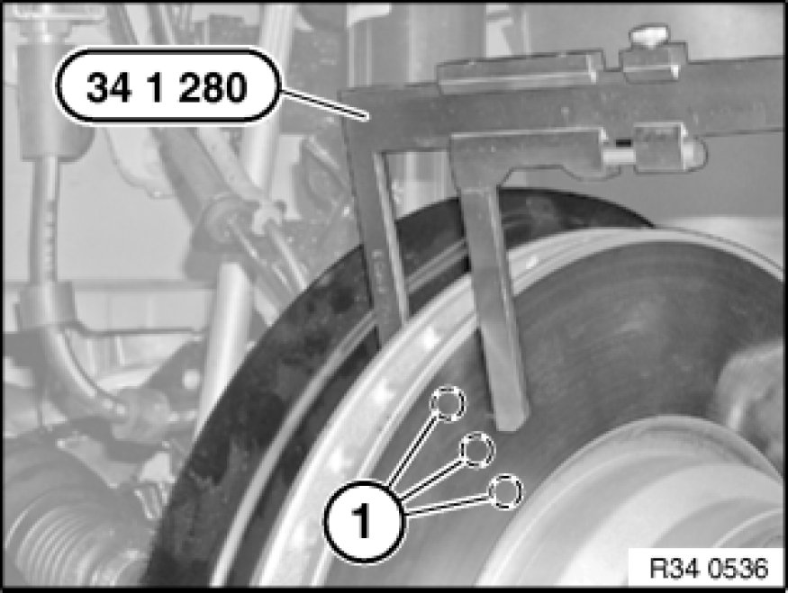

Brake Rotor/Disc: Testing and Inspection
34 00 ... - Checking brake discs

Special tools required:
- 34 1 280 34 1 280 Sliding Caliper

Necessary preliminary tasks:
- Remove wheels Removing or Installing Front or Rear Wheel

Checking thickness difference:
- Measure thickness difference within brake surfaces at 8 point (spread over the circumference) with a micrometer gauge
- Compare measurement result with setpoint value [1][2]34 11 Front Brake

Check minimum brake disc thickness:
- Position special tool 34 1 280 34 1 280 Sliding Caliper at three measuring points in measuring area (1) and measure
- Compare measurement result and lowest value with setpoint value [1][2]34 11 Front Brake